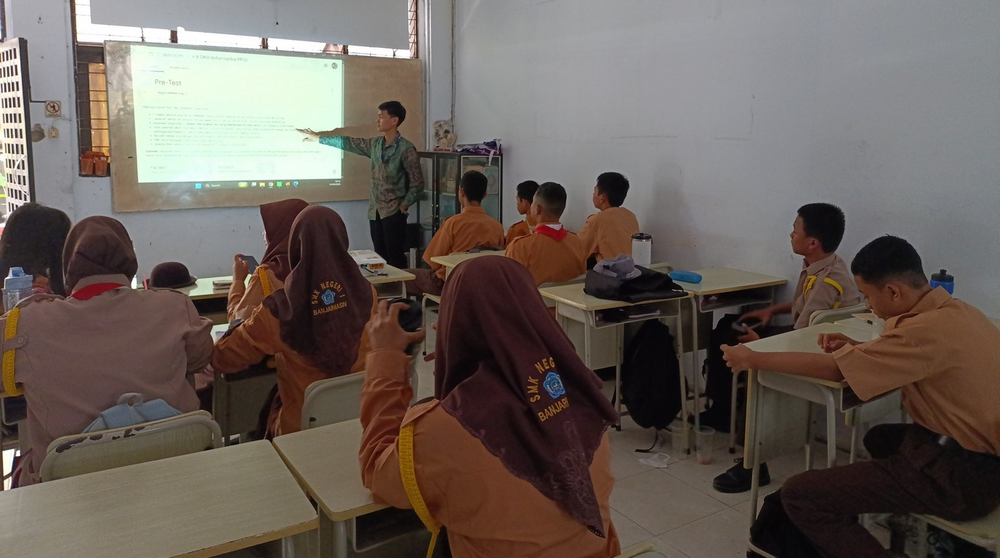
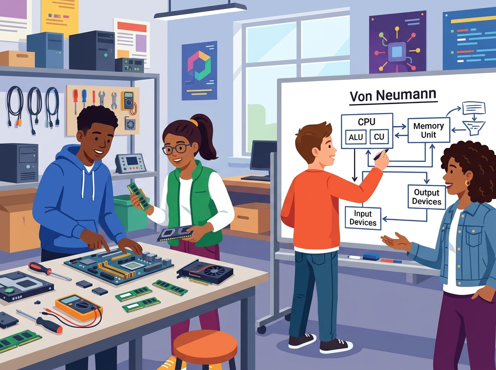
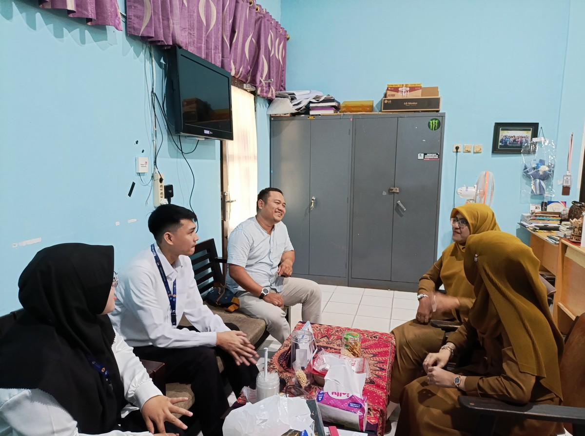

Dokumentasi komprehensif pelaksanaan PPL Mandiri oleh Akhmad Wahyu Redhani, S.Kom. di SMK Negeri 1 Banjarmasin. Memadukan model Project-Based Learning (PjBL), Deep Learning, dan Culturally Responsive Teaching (CRT) untuk mencetak talenta vokasi berdaya saing industri.
Mahasiswa PPG / NIM
Akhmad Wahyu Redhani • 2530111713968
Sekolah Mitra & Pembimbing
SMKN 1 Banjarmasin • Masnah, S.Tr.Kom.

Pembelajaran Interaktif Kelas X B DKV
Siklus Refleksi PPL
Terbimbing & 4 Mandiri
KKTP > 80 Rata-rata
PBL & PjBL Berdiferensiasi
Total Tenaga Pendidik SMKN 1 BJM
Laboratorium Komputer & TEFA
Praktik Mengajar Mandiri X DKV
Artefak LK & Modul Ajar Resmi
Mempersiapkan peserta didik SMK tidak hanya mahir sebagai operator teknologi, melainkan memiliki nalar kritis arsitektural dan kemampuan pemecahan masalah (troubleshooting) berstandar industri.
NIM: 2530111713968
Bidang Studi Pendidikan Informatika
Selama mengampu pembelajaran di kelas X B DKV, saya mengintegrasikan pendekatan kontekstual kejuruan. Murid DKV memiliki kepekaan visual yang tinggi dan antusiasme luar biasa saat materi Informatika dihubungkan dengan kebutuhan nyata profesi mereka (seperti spesifikasi PC desain, rendering grafis, hingga penataan laporan proyek klien).
Siswa merancang spesifikasi komputer ideal vs hemat dan menghasilkan produk troubleshooting kreatif (infografis Canva, video tutorial, artikel web).
Mindful saat menyusun sintaks formula Excel, Meaningful dengan data riil lingkungan lokal, dan Joyful saat merancang slide interaktif.
Diferensiasi pembelajaran terukur: Kelompok Perintis (bimbingan intensif), Kelompok Cakap (kartu instruksi), dan Kelompok Mahir (tutor sebaya & combo chart).
Studi kasus riil analisis kelestarian lingkungan dan kualitas air Waduk Riam Kanan Kalimantan Selatan selama 12 bulan sebagai materi olah data TIK.
Hasil kajian mendalam terhadap ekosistem kelembagaan, sarana prasarana vokasi, kultur disiplin industri, dan karakteristik murid di SMK Negeri 1 Banjarmasin.
Dipimpin oleh Ibu Agustin Purnomosari, S.Pd., M.Pd. dengan 4 Wakasek (Kesiswaan, Sarpras, Kurikulum, HKI/IDUKA). Sinergi fungsional transparan didukung pembagian wewenang yang dinamis dan terstruktur.
Evaluasi SKP via e-Dialog DigitalKapasitas sarpras masif: 8 Lab PC, 2 Lab Perkantoran, Perpustakaan Digital, dan Unit Produksi Business Center. Inovasi unik: jurusan TKJ merakit komputer sendiri untuk menekan efisiensi belanja modal.
Standar Industri & Ambang Rusak 50%Inovasi pendampingan personal: setiap guru membina 18–20 murid untuk deteksi dini kendala belajar. Komunitas Belajar (KOMBEL) aktif sebagai laboratorium riset mandiri perangkat ajar Kurikulum Merdeka.
P5 Sistem Blok Kebekerjaan DUDITotal 22 Halaman Analisis Komprehensif (Manajemen Kesiswaan, Kurikulum, SDM, Sarpras, Anggaran, SIM, Ketatalaksanaan)
Dua modul ajar terstruktur berbasis Project-Based Learning dan Problem-Based Learning yang diselaraskan dengan kebutuhan kompetensi kejuruan DKV.

Modul ini dirancang agar murid memahami prinsip kerja komputer secara mendalam melalui analogi kontekstual (seperti dapur restoran untuk Von Neumann). Murid bekerja dalam kelompok 5–6 orang menganalisis kebutuhan perangkat keras/lunak (pilihan hemat vs ideal) sesuai profesi riil dan memecahkan 8 skenario kasus troubleshooting.
Model Von Neumann, Analisis Hardware Profesi, Klasifikasi Software & Driver, Analisis Troubleshooting, Presentasi Produk Akhir.
Pilihan produk pemecahan masalah: Poster Infografis Canva, Video Tutorial Screencast, atau Artikel Web informatif.
LKM 1 (Hardware), LKM 2 (Software & Peer Review tertulis), LKM 3 (Troubleshooting sistematis & refleksi).
Diagnostik Kognitif & Non-Kognitif (10 soal), Formatif LKM, Sumatif Post-Test (10 PG + 2 Esai), Rubrik Presentasi.
Rekam jejak evaluasi diri, identifikasi kendala kelas, umpan balik konstruktif Guru Pamong, dan tindak lanjut perbaikan dari Praktik Terbimbing hingga 4 Siklus Pembelajaran Mandiri.
Apersepsi materi, asesmen diagnostik awal kognitif dan non-kognitif, serta pembagian 6 kelompok heterogen untuk persiapan PjBL berjalan lancar.
Pengelolaan waktu belum optimal sehingga instruksi tugas projek belum terperinci dan diskusi kelompok belum sempat terlaksana optimal.
Ibu Masnah, S.Tr.Kom. menyarankan untuk menyediakan silabus/bahan bacaan lebih awal dan menyusun LKM terstruktur agar murid siap sebelum jam pelajaran.

"Menjadi guru vokasi menuntut kesabaran ekstra dan kemampuan merancang tahapan instruksi yang ramah bagi beragam kesiapan murid. Guru yang hebat tidak hanya menguasai materi teknis, tetapi mampu menjaga suasana kelas tetap aman, suportif, dan inspiratif."
Seluruh berkas lembar kerja observasi, refleksi terbimbing dan mandiri, serta modul ajar lengkap tersedia untuk diunduh.
Analisis visi-misi, kurikulum, SDM guru, tata tertib, sistem informasi, dan sarana prasarana SMKN 1 BJM.
Karakteristik murid, fasilitas multimedia kelas, transformasi perpustakaan digital, serta 15+ kegiatan ekskul.
Apersepsi materi Sistem Komputer, diagnostik kognitif/non-kognitif, serta masukan pengelolaan waktu awal.
Pertemuan kedua Sistem Komputer X B DKV: apersepsi kontekstual desainer & penataan alur pengerjaan tugas.
Pertemuan ketiga bab Sistem Komputer: presentasi kelompok, evaluasi tes sumatif, dan penanganan kelas daring.
Praktik demonstrasi Word dan Excel: penerapan strategi chunking instruksi pendek dan sistem bantuan tutor sebaya.
Pengumpulan tugas di Google Classroom, tes sumatif tertib, dan analisis hasil untuk tindak lanjut remedial.
Perangkat pembelajaran lengkap: LKM 1-3, instrumen diagnostik, kisi-kisi sumatif, dan glosarium komputer.
Integrasi 5 Pilar Pedagogis: olah data Excel ke Word dan presentasi PPT, dataset lingkungan 12 bulan Kalsel.